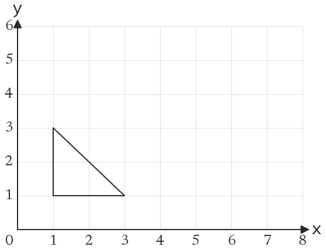
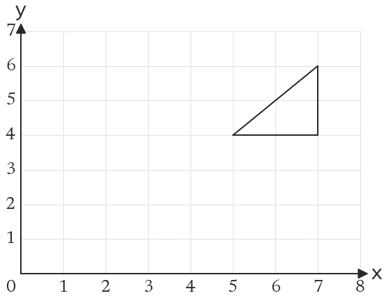
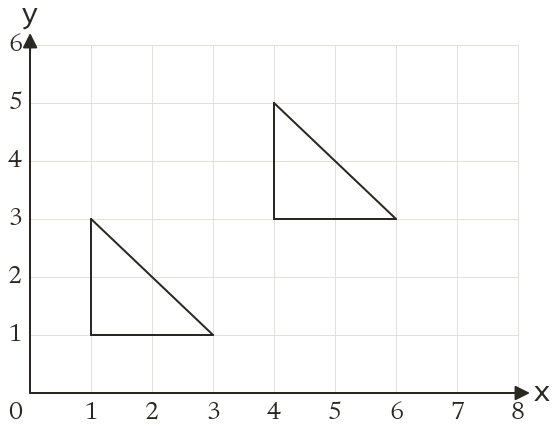
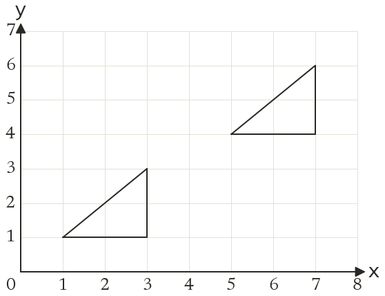

Westonbirt Maths · Transformations
Translating with Column Vectors
Name: ______________________ Date: ____________
1
Translate the triangle by the vector 32. Write down the corners of the image.
2
Translate the triangle by the vector -4-3. Write down the corners of the image.
3
The point (6, -2) is translated by -35. Where does it go?
4
The point (-4, 1) is translated by 2-6. Where does it go?
5
Write the column vector that moves a shape 5 right and 3 down.
Ext
A point is translated by 3-2 and ends at (1, 4). Where did it start?



